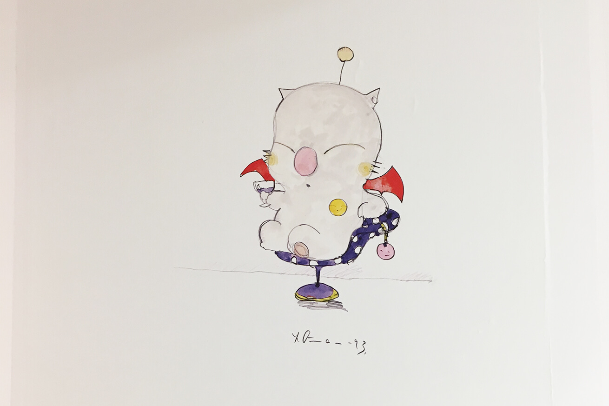
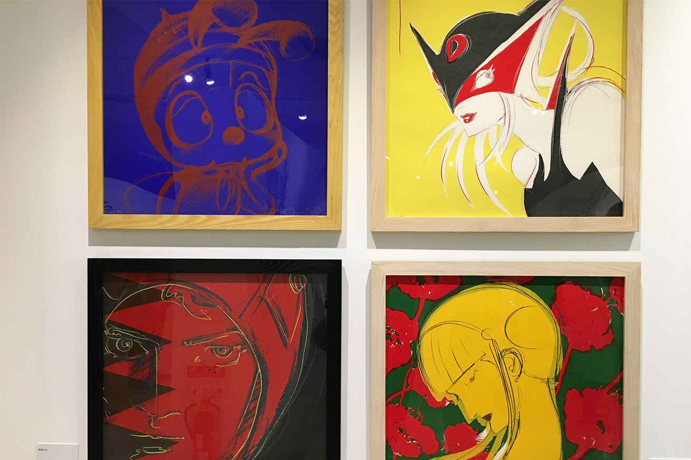
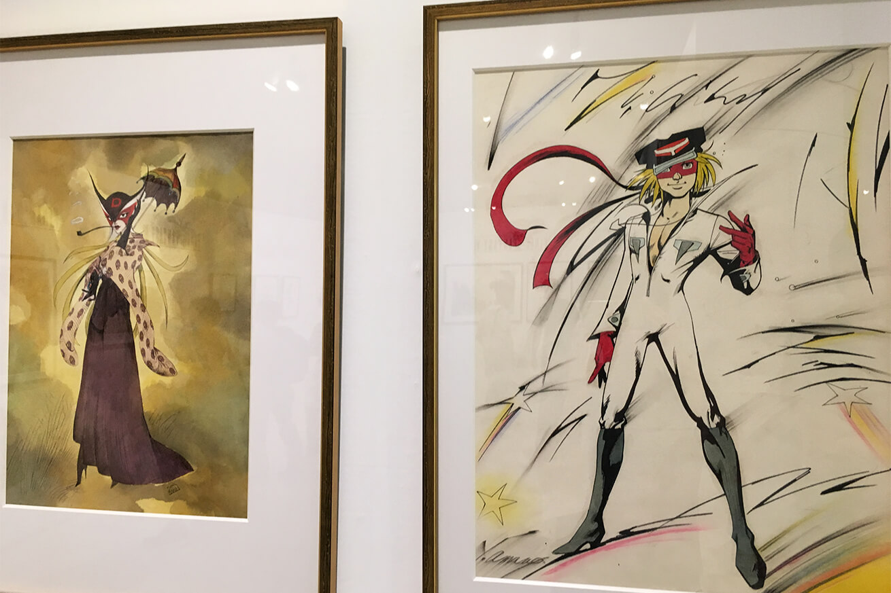
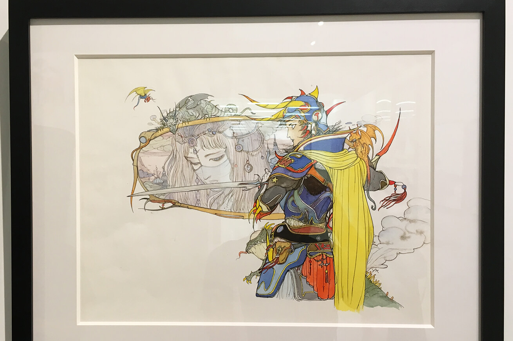
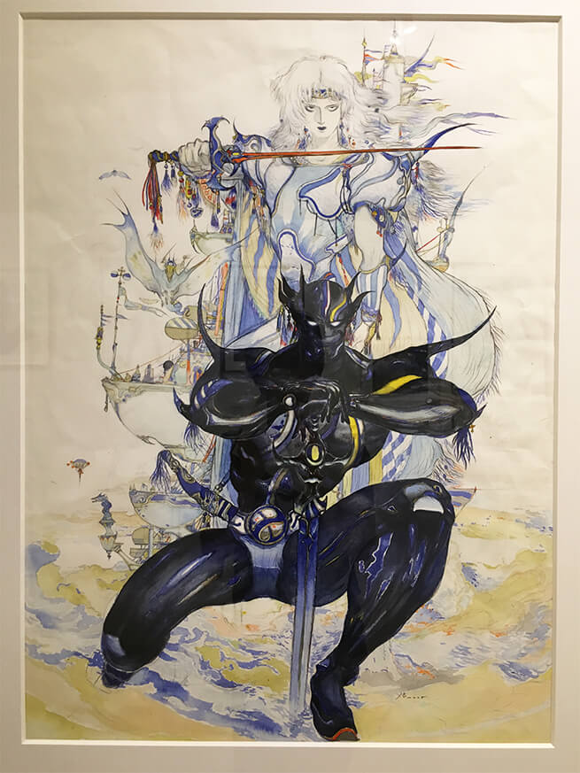
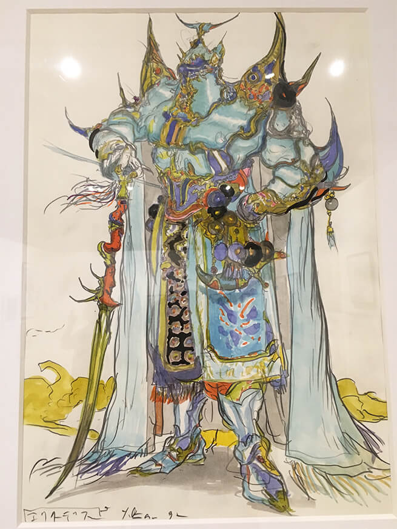
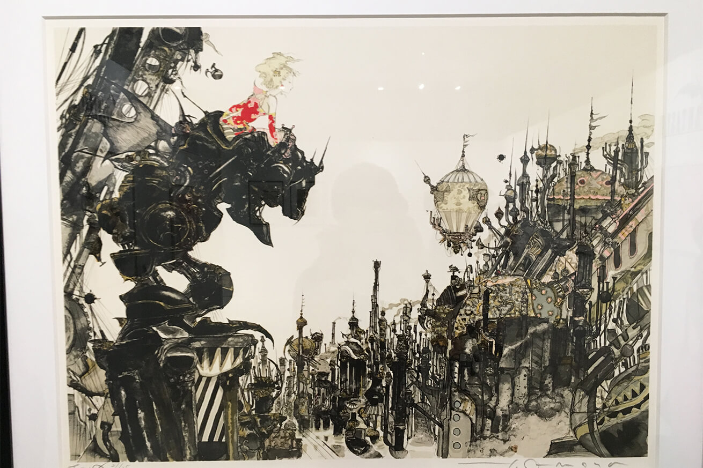
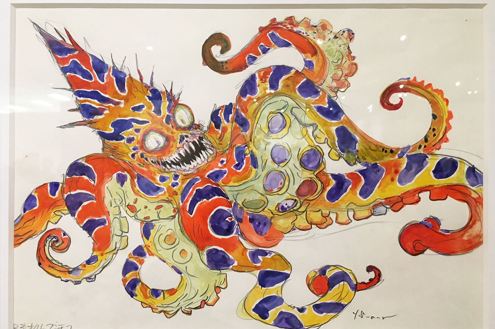
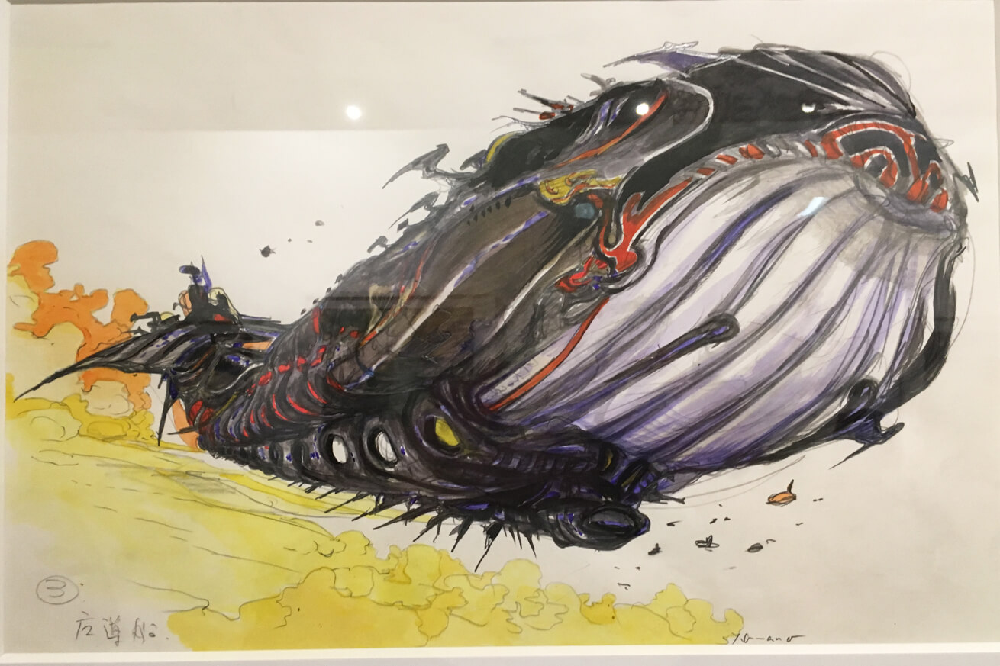

「FINAL FANTASYと天野喜孝の世界展」に行ってきました。
天野喜孝さんといえばFINAL FANTASYのキャラクターデザインで有名ですが、タイムボカンシリーズのキャラクターデザインもしていたそうです。
僕はFAINAL FANTASY Ⅳが特に好きで、天野さんが作り出すキャラクターデザインとFINAL FANTASY Ⅳの「世界観 」「ストーリー」「音楽」がマッチしていて、当時小学生だった僕は衝撃を受けてずーっとやっていた記憶があります。
出だしのプレリュードからワクワク感が止まりません。
場所は池袋駅のサンシャインシティ文化会館ビル3F展示ホールCです。
駅からは少し遠いので歩きが少し疲れますが、展示場に入った瞬間、流れている音楽と原画で疲れも吹っ飛びテンションが上がってしまいました。さらにスマホだったら撮影OKでした。
        最後に
実は写真が撮れることが嬉しくて、展示されていた原画は一枚ずつ全て撮ってしまいました。他の人も一枚とっては次の原画へ移動するみたいな感じだったので、全部撮った人も結構いたかと思います。
やっぱりみんな思い入れがあるんだろうなぁ。この繊細なタッチかっこいいです。
久しぶりにFAINAL FANTASY Ⅳをやりたいなぁ。